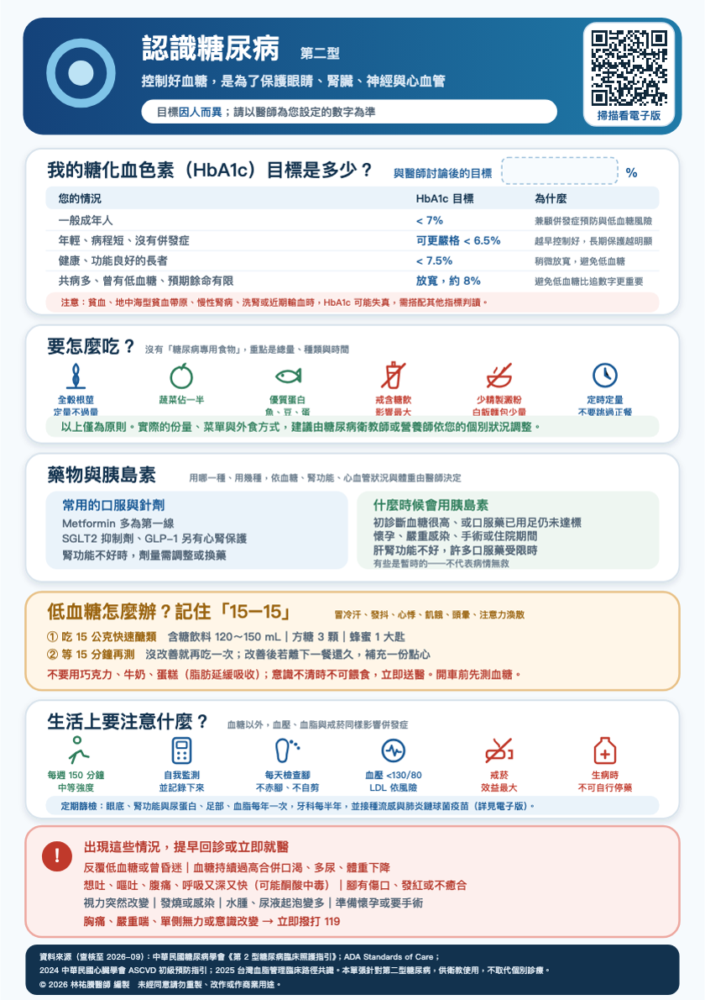

🍬
低血糖怎麼辦？
主題 8／12低血糖的症狀有發抖、冒冷汗、心悸、肚子餓、頭暈、注意力渙散。
處理的方法請記住十五加十五。先吃十五公克的快速醣類，例如含糖飲料一百二十到一百五十毫升、方糖三顆，或是蜂蜜一大匙。等十五分鐘再測一次，如果沒改善就再吃一份。改善之後若離下一餐還久，再補一份點心。
很重要的一點：不要用巧克力、牛奶或蛋糕來急救，因為裡面的脂肪會延緩吸收。
如果意識不清，絕對不可以餵食或灌東西，請立刻撥打一一九。
還有，開車前請先測血糖。如果您常常沒有感覺就低血糖，一定要告訴醫師，那表示藥物需要調整。下載原始 A5 衛教單查看原始衛教圖卡

點選圖卡可開啟大圖。原稿來源與說明
資料來源（查核至 2026 年 10 月）：
中華民國糖尿病學會第 2 型糖尿病臨床照護指引；ADA 糖尿病照護標準；
2025 台灣血脂管理臨床路徑共識；2022 台灣高血壓治療指引。本單張供衛教，不取代個別診療。
© 2026 林祐賸醫師 編製 未經同意請勿重製。